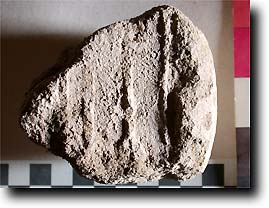
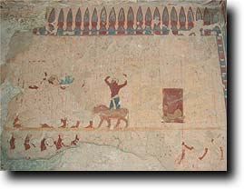
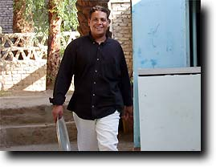
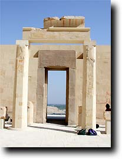
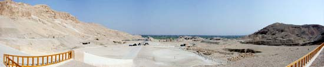
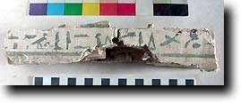
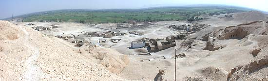
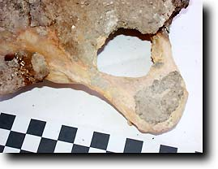
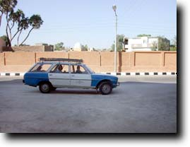

The Dig Diary 2001--Part 5
The Dig Diary 2001--Part 5
Sunday 14 OctoberHelen and I began the day by starting to make choices for objects to register. The registration system has an interesting background: it presumably started both as a way of keeping an official note of what was found and also as a basis for the division of antiquities which followed. Now of course there are no divisions, and normally one registers just the nicest finds. With the impressive box we now have for final storage of many of our finds, we want to store in that box not just the 'nice' objects, but also a cross-section of interesting material which shows what has been learned about the tomb. So we each work on different areas. Among the things I put in the registration box were a number of pieces of a sealing-like material which I had assumed belonged to the sealing up of the burial of Senneferi; the adjacent photo shows his name in the stamp on the sealing. I happened to show these to Pamela, who pronounced them to be jar sealings, having remarked to herself that it was surprising that there were none such given all the pottery. So we went through all the sealing material, and, sure enough, a number of the fragments may have had this as their origins! Everything else went well in the course of the day. Heike is close to finishing the ostraka, as she is due to leave on Tuesday morning, and the pottery drawing is going well. This morning Abdul-Rahman commented that he was opening tomb TT42 for the Cairo Centre of Documentation to look at, and did we want to have a look? We certainly did, particularly as TT42 has the only parallel to a scene in TT99 which shows a fortress in a tomb of this date. Have a look at the page on Wall 5 for more. |
| 
To show a completely different side of working in Egypt, here is a photograph of the person who principally looks after us at the Abul Kassem hotel, Badawi. He does breakfast, lunch and dinner, and most other things beside. Also at lunch every day we are assailed by up to five cats who live in the area. Here is a link to our 'Mog shots'. |
Monday 15 OctoberA variety of things happen today, not just at the tomb. Heike finished her work on the ostraka, and the work on the pottery continued well, although I did hear reports that certain pots were being 'uncooperative'. Helen and I continued sorting coffins into groups for the box in the magazine, and I began to take the photographs needed to put into the register book for identification purposes. Helen spent a couple of hours down the pottery shaft continuing to sort it out. Our friend the mother dog spent the whole morning with us in the courtyard. Today being Heike's last full day, we requested permission to go and look at the third terrace of the temple of Hatshepsut at Deir el-Bahari, which is presently being prepared for opening to tourists. Indeed everyone is thinking that President Mubarak himself will be coming to open it at some time soon. So Abdul-Rahman took us round there; we were followed the whole way by the dog! The third terrace is really interesting and very well restored. We had only been in there for about ten minutes when we spied a convoy of cars approaching. All sorts of suggestions were made, but it was clearly not large enough for the President. Anyway, we thought we should get out of the way. It turned out to be the Minister of Tourism. Below is a panoramic view of the Assasif taken from the temple. You can see his motorcade in the middle. |
|

|
|
Various other things also happened at the hotel. The first members of the Hungarian Theban Mission arrived, as did the first tourists we have seen in the hotel since we arrived. In the evening I went over to Luxor to get the film I had taken that day processed; while I was out, Pamela Rose's door lock failed, which led to an amusing evening of hammering and crashing, and some electrical problems were also sorted out. |
Tuesday 16 OctoberHeike Behlmer comes to the tomb today only for a short while, as she has to go off to the airport about midday. She's done a great job on the ostraka; now she has to go back to resume teaching in Göttingen. She'll be missed. Late last night our conservator, Julie Dawson, and our textile specialist April Farmer arrived. They slept in and came late to the tomb. Julie has been with us since 1993, and is planning on finishing various conservation matters relative to the walls, and also preparing a number of objects for packing. Her first priority is to get some of the textiles ready for April to look at. We have a fascinating collection of material, ranging from inscribed ones to those with colourful patterns--for a sample see the Finds section. We'll add some new photos soon. This is April's first trip to Egypt, but she has had a lot of experience working on excavated textiles before. Yet more pot drawing took place, and it's going according to plan. Helen spent some time taking some digital photos of coffin fragments for the record, and she also tackled a couple of bags of bones which we missed earlier in the season. The photo at left shows a coffin fragment belonging to a 25th dynasty priest called Padiamun.  Above is a view of part of Qurna taken from high on the hill. I go to Luxor in the evening; the film has turned out fine and I can proceed with pictures, when I can get my hands on a table... |
Wednesday 17 OctoberHelen and I worked at home for the most part today, as all the tables in the tomb are fully occupied and we have anyway some drawing and computer work to do. Hence no real photos of work. Pam and Gillian are wrapping up the pottery work, as Pam leaves today and Gillian next Monday. Julie and April continue with their work on the different aspects of textiles. April has read in the Dig Diary about the fact that Tony Waldron couldn't come, and has brought along a bone textbook. Very kind of her. We're very keen to work out the sex of the elaborate mummy from Senneferi's burial, so we have a look at the pelvic bones, which are usually the best indicator. But it's not clear to us, although there are some hints that it could be female rather than male. Taiamu, Mrs Senneferi, perhaps? |
|
 Pam says farewell to TT99 for the last time and heads for the hotel. She has worked with us on Theban tomb pottery since 1986 and is both highly knowledgeable and also great fun. It really doesn't seem like she's been here two weeks. Here she heads off to the airport and the rain in Cambridge. |
|
All text and images © Nigel & Helen Strudwick 2001
|
© Nigel Strudwick 1997-2016